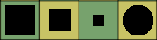
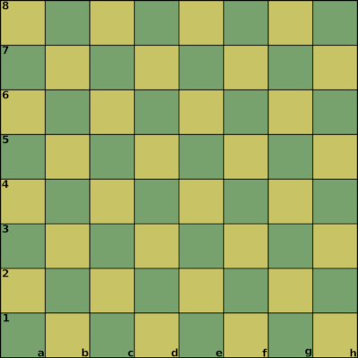
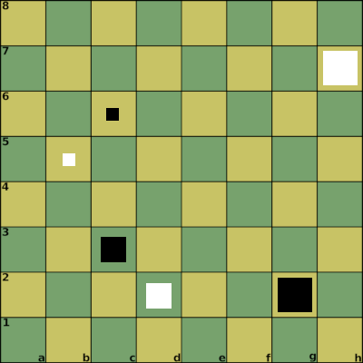
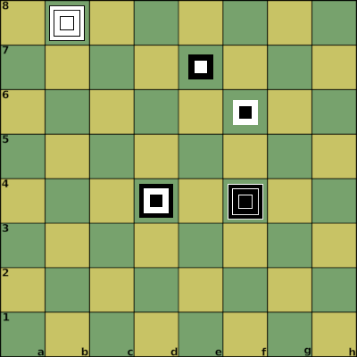
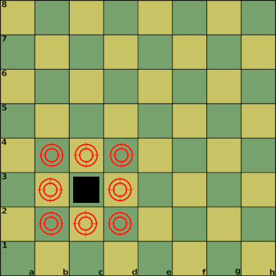

by Afrasinei Alexandru Iulian
Nerva is a board game that utilizes a standard chess board and 192 pawns + 2 kings.
Two opposing forces (White and Black) face each other in battle on the game board.
It is a turn-based wargame in the spirit of chess with different rules.
The goal is to capture the enemy king.
one chess board (8x8)
White
Piece shapes
Pawns (Boxes), King (Cylinder)
96 pieces (pawns)
the king (cylinder)
Black
Piece shapes
Pawns (Boxes), King (Cylinder)

96 pieces (pawns)
the king (cylinder)
A standard chess board (8x8).

A maximum of 3 pawns can be placed on top of each other anywhere on the board.
Think of the board as 3 stacked boards on top of each other.
Chess algebraic notation is used to identify board locations.
This is extended for Nerva by using the following syntax to identify the stacked boards:
[row][column]_[board] - A pawn is placed on the board.
[row]
From a to h
[column]
From 1 to 8
[board]
From 1 to 3
Board 1 is the normal chess board
This is how we identify the pieces on the 3 stacked boards
[K][row][column][board] - King reveal.
[-K][row][column][board] - King is captured, game over.
Examples:
a1_1
d4_2
a1_3
K_a1_3 - This is a king reveal.
-K_a2_2 - The king is captured, game over.
a1_1 d4_2 a1_3 K_A1_3
On a board tile, stack the pieces in this order: Large pawn, Medium pawn, Small pawn.
Thinking in terms of stacked boards:
Board 1 uses the large pawns, board 2 uses the medium pawns, and board 3 uses the small pawns.
Examples:

c3_2 (White Pawn on board 2)
g2_1 (Black Pawn on board 1)
d4_1 d4_2 d4_3 (Black Pawn board 1, White Pawn board 2, Black Pawn board 3)
c6_3 (Black Pawn on board 3)
f6_2 f6_3 (White Pawn on board 2, Black Pawn on board 3)

c3_2 (White Pawn on board 2)
g2_1 (Black Pawn on board 1)
d4_1 d4_2 d4_3 (Black Pawn board 1, White Pawn board 2, Black Pawn board 3)
c6_3 (Black Pawn on board 3)
f6_2 f6_3 (White Pawn on board 2, Black Pawn on board 3)
96 pawns and the white king.
96 pawns and the black king.
Each pawn has 1 attack point and 1 defense point.
If a pawn is at c3, the adjacent tiles are:
b2 c2 d2 d3 d4 b4 c4 b3
The attack and defense will happen on these adjacent tiles.

More details in the rules of defending, attacking, stacking sections.
The king has no attack points.
The game starts with an empty board.
Each player gets their 96 pawns and their king.
The White player places the first pawn on the board.
The pawns can be placed on any empty tile.
A maximum of 3 pawns can be stacked on a tile.
The king’s location is hidden from the enemy player.
Each player decides at the beginning where their king will be located and keeps the information to themselves.
For example, it can be written on a piece of paper.
Another option is to have a friend or spectator decide the positions of both kings.
The king will be placed on the board when it is revealed—that is, when a player places a pawn on its position.
When the king is revealed, the player or spectator will place it on the board.
The starting player places a pawn, and then the players take turns placing pawns.
The game is over when one king is captured or all pawns are placed.
A pawn will add a defense point to all adjacent friendly pawns (or king).
Example:
If a pawn is at c3, the adjacent tiles are:
b2 c2 d2 d3 d4 b4 c4 b3
Any friendly pawn on these positions will receive an additional defense point from the c3 pawn.
A pawn will add an attack point to all adjacent enemy pawns (or king).
Adjacent enemy pawns can be attacked.
An attack will be declared by the player, each attack takes a turn.
If the attack points are higher than the defense points on a particular pawn, the attack will be successful.
The pawn will be removed from the board and replaced by another pawn from the attacker.
If you make a mistake and make an unsuccessful attack, the turn will change.
When 3 pawns from the same player occupy the same position on all 3 boards (a stack of 3 pawns), then each receives 3 defense points and 3 attack points.
When such a stack is formed, the existing pawn attack/defense points will be replaced with 3.
There is no addition of existing points, so be careful with this.
Example:
c3_1 c3_2 c3_3
The goal is to reveal and capture the enemy king.
Afrasinei Alexandru Iulian
Email:
alexandruafrasinei@gmail.com
GitHub website:
https://github.com/aiafrasinei/Nerva